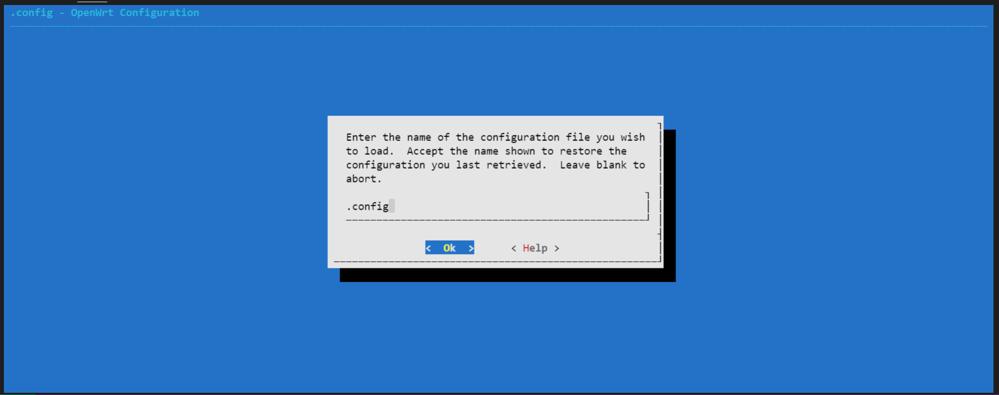

基於OpenWrt作業系統下運行AWS IoT GreenGrass Version 2
AWS IoT Greengrass Version 2是一種開源物聯網 (Internet of Thing, IoT) 邊緣運行(Edge Computing)時和雲端服務(Cloud Service)，可協助您在設備上構建、部署和管理 IoT 應用程序。您可以使用 AWS IoT Greengrass Version 2來建置軟體，使您的設備能夠對它們生成的數據進行本地操作、基於機器學習模型運行預測以及過濾和彙總設備數據。AWS IoT Greengrass Version 2使您的設備能夠在距離數據生成位置更近的位置收集和分析數據，自主回應本地事件，並與本地網路上的其他設備進行安全通訊。運行AWS IoT Greengrass Version 2的設備還可以與 AWS IoT Core進行安全的通訊，並將IoT數據導至 AWS的雲端服務上。您可以使用AWS IoT Greengrass Version 2使用預先構建好的的軟體元件(稱之為Component)來建構邊緣應用程序，這些軟體元件可以將您的邊緣設備連接到AWS上的其他服務或第三方服務。您還可以使用AWS IoT Greengrass Version 2使用Lambda函數、Docke容器、原生作業系統處理程序或您選擇的自訂程序來封裝和運行您的軟體。根據AWS官方文件，目前AWS IoT Greengrass Version 2所支援的硬體平台與作業系統(Operating System, OS)如下表所示。
| CPU架構 | 作業系統 |
|---|---|
| Armv7l | Linux |
| Armv8(AArch64) | Linux |
| x86_64 | Linux |
下圖演示AWS IoT Greengrass的裝置是如何與AWS IoT Greengrass雲端服務以及其他AWS服務的互動。

而在廣大的嵌入式作業系統中，OpenWrt是一個適合用於嵌入式裝置的一個Linux發行版本，目前市面上許多的嵌入式硬體平台皆採用以OpenWrt作為其基礎，例如路由器(Network Router)、網路閘道(Network Gateway)或工業用電腦，藉由在OpenWrt上運行AWS IoT Greengrass Version 2，將使其在雲端上強大的功能帶至邊緣端設備。由於目前AWS IoT Greengrass Version 2尚未正式支援OpenWrt上的運行，在本文中我將向您說明如何基於在OpenWrt作業系統下運行AWS IoT Greengrass Version 2，並透過範例演示AWS IoT Greengrass Version 2強大的功能，其中搭配使用的硬體平台為Raspberry Pi 4。
先決條件與事前準備
在您進行本文中的技術操作與範例演示之前，請先確認以下的開發環境與需求。
- 一台可以進行OpenWrt原始碼編譯的個人電腦或筆記型電腦，建議搭配Ubuntu 18.04或較新的Linux作業系統版本，本文採用的是Ubuntu 18.04。
- 一個註冊的AWS帳號，可參考此鏈結進行AWS帳號申請，每個AWS帳號皆有提供相關服務的免費額度，關於服務免費額度的相關訊息可參考此鏈結。
- 一個Raspberry Pi 4硬體開發平台。
- 選項：AWS Command Line Interface(AWS CLI)，可以讓您使用命令列的方式來使用AWS相關服務，請參考此鏈結在適合您的作業系統環境下安裝AWS CLI。
OpenWrt
目前由OpenWrt論壇所提供給Raspberry Pi 4的映象檔是基於musl-c所編譯產生(可參考此鏈結)，因為目前AWS IoT Greengrass Version 2尚未支援musl-c，本節將帶您建置基於glib-c所編譯出來適合運行AWS IoT Greengrass Version 2的OpenWrt映像檔。
登入建置OpenWrt的個人電腦或筆記型電腦，執行系統更新與安裝編譯所需之軟體。
$sudo apt update$sudo apt install build-essential ccache ecj fastjar file g++ gawk gettext git java-propose-classpath libelf-dev libncurses5-dev libncursesw5-dev libssl-dev python python2.7-dev python3 unzip wget python3-distutils python3-setuptools rsync subversion swig time xsltproc zlib1g-dev下載OpenWrt原始碼，並進行環境設置，您可以從此鏈結下載編譯OpenWrt時所需要用到的組態檔。
x#下載OpenWrt原始碼$cd ~$mkdir workspace && cd workspace$git clone https://git.openwrt.org/openwrt/openwrt.git$cd ~/workspace/openwrt#更新並安裝OpenWrt相關之組件$./scripts/feeds update -a$./scripts/feeds install -a#安裝python3所需要的組件，在後面的範例程式中會使用到$./scripts/feeds install python3複製下載的組態檔至OpenWrt的根目錄，並進行組態檔的載入。
xxxxxxxxxx$cd ~/workspace/openwrt#/path/to/ 為您下載範例組態檔的路徑$cp /path/to/openwrt.config .config#設定編譯OpenWrt相關參數$make menuconfig按照下列圖示，進行組態檔的載入。




在載入OpenWrt組態檔之後進行編譯，視您的機器能力不同，編譯的時間需數十分鐘不等。
xxxxxxxxxx$cd ~/workspace/openwrt/#若編譯途中產生錯誤，請移除-j$(nproc)進行除錯$make -j$(nproc) V=s若編譯完成並沒有產生任何錯誤，您可以在此目錄下找到openwrt-bcm27xx-bcm2711-rpi-4-squashfs-factory.img.gz。
xxxxxxxxxx$cd ~/workspace/openwrt/bin/targets/bcm27xx/bcm2711-glibc/$lsconfig.buildinfo openwrt-bcm27xx-bcm2711-rpi-4-squashfs-factory.img.gz profiles.jsonfeeds.buildinfo openwrt-bcm27xx-bcm2711-rpi-4-squashfs-sysupgrade.img.gz sha256sumsopenwrt-bcm27xx-bcm2711-rpi-4-ext4-factory.img.gz openwrt-bcm27xx-bcm2711-rpi-4.manifest version.buildinfoopenwrt-bcm27xx-bcm2711-rpi-4-ext4-sysupgrade.img.gz packages準備一個空的SD card，建議容量大於32GB，在本文中我們使用的是balenaEtcher來進行映像檔的刷入，您可以從此鏈結下載balenaEtcher。

Raspberry Pi 4
在製作完OpenWrt SD card之後，將其插入Raspberry Pi 4進行開機，第一次開啟時您必須使用鍵盤與螢幕來進行Raspberry Pi 4上OpenWrt的設定，以便進行後續AWS IoT Greengrass Version 2的運行與範例演示。請注意：OpenWrt預設使用者為root，預設沒有密碼，本文中使用是預設的root權限，登入系統後之命令列提示為井字號 #。
請參照下列指令與設定進行OpenWrt上的網路介面設定。
xxxxxxxxxx#cd /etc/config#vi network在此檔案最後加入下列兩行設定，儲存並離開。
xxxxxxxxxxconfig interface 'wan'option proto 'dhcp'本文在Raspberry Pi 4使用無線網路來存取網際網路的資源，請參照下列指令與設定進行OpenWrt上的無線網路設定。
xxxxxxxxxx#cd /etc/config#vi wireless在此檔案上註記掉原本的無線網路設定，並根據您的無線網路環境增加設定。
xxxxxxxxxx#請根據您的無線網路環境修改channel, band與htmode參數config wifi-device 'radio0'option type 'mac80211'option path 'platform/soc/fe300000.mmcnr/mmc_host/mmc1/mmc1:0001/mmc1:0001:1'option channel '11'option band '11g'option htmode 'HT20'option disabled '0'#您可以選擇註記或刪除下列原始的無線網路設定#config wifi-iface 'default_radio0'#option device 'radio0'#option network 'lan'#option mode 'ap'#option ssid 'OpenWrt'#option encryption 'none'#請根據您的無線網路環境修改your_ap_ssid與your_wifi_password，其中your_ap_ssid是您的無線網路AP SSID，your_wifi_password是您的無線網路密碼config wifi-ifaceoption mode 'sta'option device 'radio0'option network 'wan'option ssid 'your_ap_ssid'option encryption 'psk2'option key 'your_wifi_password'當您設置完網路介面與無線網路之後，重啟OpenWrt的網路服務使其生效。
xxxxxxxxxx#service network restart#ping www.amazon.comPING www.amazon.com (23.208.81.175) 56(84) bytes of data.64 bytes from 23.208.81.175: icmp_seq=1 ttl=117 time=60.8 ms64 bytes from 23.208.81.175: icmp_seq=2 ttl=117 time=61.5 ms64 bytes from 23.208.81.175: icmp_seq=3 ttl=117 time=61.4 ms為了方便遠端操作OpenWrt，本文建議開啟ssh遠端登入，由於OpenWrt預設會開啟防火牆，在本文中我們會先行關閉防火牆進行遠端的登入，在運行本文中的範例之後，請您根據您原有的防火牆設定再次開啟防火牆。
xxxxxxxxxx#service firewall stop透過遠端機器建立ssh連線連至您的OpenWrt，本文中使用putty來進行ssh連線，您可以從此鏈結下載putty。
xxxxxxxxxx$ssh root@your_rpi_ip其中參數your_rpi_ip可以在OpenWrt內使用下列指令獲取。
xxxxxxxxxx#ifconfig wlan0wlan0: Link encap: Ethernet HWaddr xx:xx:xx:xx:xx:xxinet 172.20.10.2 netmask 255.255.255.240 broadcast 172.20.10.15inet6 addr 2001:b011:200f:2234:b04d:63cd:bdc4:15a8/64 Scope:LinkRX packets 0 bytes 0 (0.0 B)RX errors 0 dropped 0 overruns 0 frame 0TX packets 0 bytes 0 (0.0 B)TX errors 0 dropped 0 overruns 0 carrier 0 collisions登入之後的畫面會如下，其中OpenWrt的版本號會根據您當下所下載的原始碼不同而異。

由於AWS IoT Greengrass Version 2為JAVA的rumtime，在此需要下載JDK的環境以便後續運行AWS IoT Greengrass Version 2，本文使用的JDK為Amazon Corretto 11，請參考下列的指令下載並設定JAVA環境變數。
xxxxxxxxxx#cd ~#curl -LO https://corretto.aws/downloads/latest/amazon-corretto-11-aarch64-linux-jdk.tar.gz#tar zxvf amazon-corretto-11-aarch64-linux-jdk.tar.gz#mv amazon-corretto-11.0.12.7.1-linux-aarch64 openjdk-11#export JAVA_HOME="/root/openjdk-11"#export PATH=$PATH:$JAVA_HOME/bin#java -version運行之後您將會看到如下圖所示Amazon Corretto 11資訊，其中Amazon Corretto 11的版本號會根據您當下所下載的檔案不同而異。

您也可以將JAVA的參數寫入以下檔案，重新登入後使其永久生效。
xxxxxxxxxx#vi /etc/profile於此檔案新增以下兩行
xxxxxxxxxxexport JAVA_HOME="/root/openjdk-11"export PATH=$PATH:$JAVA_HOME/bin
AWS IoT Greengrass Version 2
在開始運行AWS IoT Greengrass Version 2之前，請參考此鏈結確認您的AWS帳號與使用者具有針對AWS IoT與AWS IoT Greengrass Version 2的服務存取權限，本文假設您已經被賦予這些服務的存取權限。請您也留意您所選擇的AWS服務區是否有提供AWS IoT Greengrass Version 2的服務，您可以透過此鏈結來確認。
登入您的AWS控制台，搜尋IoT Core服務並點擊進入。

登入IoT Core控制台後會如下圖所示。

若您登入後的主控台沒有顯示左手邊相關服務資訊列，請點擊左上方三條槓圖示以便展開。

點擊Greengrass展開服務，選擇Getting started之後在畫面右方點擊Set up one core device。

在Core device name的欄位中輸入您想要的名稱，或者您可以選擇使用系統預設值。
在Thing group中點選Enter a new group name並輸入您想要的群組名稱，或者您可以選擇使用系統預設值。

往下捲動至Run the installer，點選Copy並記錄下此行指令，在後續的步驟將會使用到此指令。
點擊View core devices。
開始運行AWS IoT Greengrass Version 2
在開始運行AWS IoT Greengrass Version 2之前，請先確認您可以取得AWS使用者帳號的存取金鑰(Access Key ID, AK)與秘密金鑰(Secret Key ID, SK)，您可以參考此鏈結獲得更多關於存取金鑰與秘密金鑰的資訊。
登入您的OpenWrt，參考下列命令設定您的AWS存取金鑰與秘密金鑰。
xxxxxxxxxx#export AWS_ACCESS_KEY_ID=your_aws_access_key_id#export AWS_SECRET_ACCESS_KEY=your_aws_secret_access_id下載AWS IoT Greengrass Version 2最新版本，其中AWS IoT Greengrass Version 2的版本號會根據您當下所下載的檔案不同而異。
xxxxxxxxxx#cd ~/#curl -s https://d2s8p88vqu9w66.cloudfront.net/releases/greengrass-nucleus-latest.zip > greengrass-nucleus-latest.zip && unzip greengrass-nucleus-latest.zip -d GreengrassCore#java -jar ./GreengrassCore/lib/Greengrass.jar --versionAWS Greengrass v2.5.0從雲端開始部署安裝AWS IoT Greengrass Version 2。請複製前面在AWS IoT控制台上的命令列，並修改成如下列範例開始進行部署。
xxxxxxxxxx#cd ~/##參數說明##sudo -E：移除此參數，本文已經使用root權限登入OpenWrt##--aws-region：請參考您所選取的AWS服務區域##--thing-name：請參考您在上面章節所命名的AWS IoT Greengrass Core Name##--thing-group-name：請參考您在上面章節所命名的AWS IoT Greengrass Group Name##--setup-system-service：移除此參數，目前OpenWrt不支援##--component-default-user：修改成root##--provision：進行部署##--deploy-dev-tools：進行額外AWS IoT Greengrass Command Line tools的部署#java -Droot="/greengrass/v2" -Dlog.store=FILE -jar ./GreengrassCore/lib/Greengrass.jar --aws-region your_aws_region --thing-name your_greengrass_core_name --thing-group-name your_greengrass_group_name --component-default-user root:root --provision true --deploy-dev-tools true當您成功部署與運行AWS IoT Greengrass Version 2之後，您應該會在終端畫面上看到如下圖所示的訊息。

檢查您是否成功運行AWS IoT Greengrass Version 2，請您參考下列的命令列，若尚未看到greengrass-cli，請稍等片刻在進行測試。
xxxxxxxxxx#cd /greengrass/v2/bin#./greengrass-cli -h當您成功部署並執行了greengrass-cli之後，您應該會在終端畫面上看到如下圖所示的訊息。

創建並部署第一個AWS IoT Greengrass Version 2的元件
在前面的章節，您已經成功的在OpenWrt上將AWS IoT Greengrass Version 2運行起來，並且透過命令列成功的部署了一個來自AWS IoT Greengrass Version 2的元件：Greengrass CLI，Greengrass CLI提供了一個在裝置端上的命令介面，讓您可以在裝置端輕鬆的開發並除錯任何在裝置端上部署的AWS IoT Greengrass Version 2元件，Greengrass CLI也可以讓您在裝置端直接部署新的元件或者重啟元件。接下來，我將帶您透過Greengrass CLI創建並從裝置端部署第一個AWS IoT Greengrass Version 2的範例元件，具體的架構圖如下。

透過遠端機器建立ssh連線連至您的OpenWrt，參考下列的命令列建置artifact的資料夾與python範例程式。
xxxxxxxxxx##請注意資料夾與範例程式的路徑，皆以前面章節為基礎，您可以按照您的需求修改位置#mkdir -p /root/GreengrassCore/artifacts/com.example.HelloWorld/1.0.0 && touch /root/GreengrassCore/artifacts/com.example.HelloWorld/1.0.0/hello_world.py
使用編輯器開啟範例程式，並將以下範例程式碼貼上並儲存離開，此時範例程式應為空的內容。
xxxxxxxxxx# Copyright Amazon.com, Inc. or its affiliates. All Rights Reserved.# SPDX-License-Identifier: MIT-0import sysimport datetimeimport timewhile True:message = f"Hello, {sys.argv[1]}! Current time: {str(datetime.datetime.now())}."# Print the message to stdout.print(message)# Append the message to the log file.with open('/tmp/Greengrass_HelloWorld.log', 'a') as f:print(message, file=f)time.sleep(1)參考下列的命令創建您元件的範例食譜(recipe)，此例子使用的是JSON格式，您也可以使用YAML格式來撰寫您的食譜。
xxxxxxxxxx##請注意資料夾與範例程式的路徑，皆以前面章節為基礎，您可以按照您的需求修改位置#mkdir -p /root/GreengrassCore/recipes && touch /root/GreengrassCore/recipes/com.example.HelloWorld-1.0.0.json
使用編輯器開啟範例食譜，並將以下範例內容貼上並儲存離開，此時範例食譜應為空的內容。
xxxxxxxxxx{"RecipeFormatVersion": "2020-01-25","ComponentName": "com.example.HelloWorld","ComponentVersion": "1.0.0","ComponentDescription": "My first AWS IoT Greengrass component.","ComponentPublisher": "Amazon","ComponentConfiguration": {"DefaultConfiguration": {"Message": "world"}},"Manifests": [{"Platform": {"os": "linux"},"Lifecycle": {"Run": "python3 -u {artifacts:path}/hello_world.py '{configuration:/Message}'\n"}}]}運行與測試您的元件，以下建議您開啟多個終端連線至OpenWrt，以利於您觀察範例的運行。
xxxxxxxxxx##請注意資料夾與範例程式的路徑，皆以前面章節為基礎，您可以按照您的需求修改位置##開啟並監看AWS Greengrass Version 2日誌#tail -F /greengrass/v2/logs/greengrass.log登入另一個終端連線至OpenWrt，參考以下的命令透過Greengrass CLI從裝置端發起部署元件。
xxxxxxxxxx##請注意資料夾與範例程式的路徑，皆以前面章節為基礎，您可以按照您的需求修改位置#/greengrass/v2/bin/greengrass-cli deployment create --recipeDir /root/GreengrassCore/recipes --artifactDir /root/GreengrassCore/artifacts --merge "com.example.HelloWorld=1.0.0"當您看到類似以下的訊息，代表此元件的部署已完成
參考以下的命令觀看此元件的日誌。
xxxxxxxxxx##範例python程式hello_world.py會持續列印訊息輸出至/tmp/Greengrass_HelloWorld.log#tail - F /tmp/Greengrass_HelloWorld.log當您看到類似以下的訊息，代表此範例元件已成功部署並運行。

透過AWS CLI打包並發佈AWS IoT Greengrass Version 2元件
您已經在前一章節成功從裝置端創建並部署了第一個AWS IoT Greengrass Version 2的元件，以下我將帶您透過AWS CLI命令列打包您的元件並發佈至AWS IoT Greengrass Version雲端服務，請注意此章節會使用到Amazon Simple Storage Service(Amazon S3)，請確認您的AWS帳號的使用者權限，您可參考此鏈結了解更多Amazon S3。
登入您已經安裝好AWS CLI命令列的機器，確保您可以使用AWS CLI命令列，您可以參考此鏈結設定您的AWS CLI。請參考下列指令來設定您的AWS CLI。
xxxxxxxxxx$aws configure並於提示下輸入您AWS帳號的訊息，畫面如下。其中AWS Access Key ID與AWS Secret Access Key請參考先前的章節，Default region name則是輸入您所使用AWS服務的服務區。

請參考下列的命令創建Amazon S3的儲存貯體(bucket)並賦予儲存貯體名稱。
xxxxxxxxxx#您可以按照您的需求給予儲存貯體名稱$EPOCH_TIME=$(date -d '06/12/2021 07:21:22' +"%s") && S3_BUCKET=ggcv2-sample-bucket-$HOSTNAME-$EPOCH_TIME && aws s3 mb s3://$S3_BUCKET登入您的OpenWrt並修改前面章節創立的食譜。
xxxxxxxxxx##請注意資料夾與範例程式的路徑，皆以前面章節為基礎，您可以按照您的需求修改位置#vi /root/GreengrassCore/recipes/com.example.HelloWorld-1.0.0.json參考下列範例修改您的食譜。其中請以步驟2中的S3_BUCKET名稱置換[YOUR BUCKET NAME]
xxxxxxxxxx{"RecipeFormatVersion": "2020-01-25","ComponentName": "com.example.HelloWorld","ComponentVersion": "1.0.0","ComponentDescription": "My first AWS IoT Greengrass component.","ComponentPublisher": "Amazon","ComponentConfiguration": {"DefaultConfiguration": {"Message": "world"}},"Manifests": [{"Platform": {"os": "linux"},"Lifecycle": {"Run": "python3 -u {artifacts:path}/hello_world.py '{configuration:/Message}'\n"},"Artifacts": [{"URI": "s3://[YOUR BUCKET NAME]/artifacts/com.example.HelloWorld/1.0.0/hello_world.py"}]}]}其中請以步驟2中的S3_BUCKET名稱置換[YOUR BUCKET NAME]，可參考下列的指令獲取S3_BUCKET名稱。
xxxxxxxxxx$echo $S3_BUCKET登入您的OpenWrt，請參考下列的指令壓縮打包GreengrassCore資料夾並上傳至遠端機器。
xxxxxxxxxx##請注意資料夾與範例程式的路徑，皆以前面章節為基礎，您可以按照您的需求修改位置#cd /root/##您可以按照您的需求決定壓縮包的名稱，或使用您習慣的壓縮工具#tar zcvf GreengrassCore.tgz ./GreengrassCore##您可以按照您的需求，使用您習慣的檔案上傳工具，在此範例中我們使用scp，其中user為遠端機器的使用者名稱，remote_machine_ip為遠端機器的ip位址，/home/user/為遠端機器的指定目錄#scp ./Greengrass.tgz user@remote_machine_ip:/home/user/登入您遠端的機器，請參考下列指令解壓縮您剛剛上傳的GreengrassCore檔案，並透過AWS CLI上傳您元件的artifacts至Amazon S3儲存貯體。
xxxxxxxxxx##請注意資料夾與範例程式的路徑，皆以前面章節為基礎，您可以按照您的需求修改位置$cd /home/user/$tar zxvf GreengrassCore.tgz$aws s3 cp --recursive /home/user/GreengrassCore/ s3://$S3_BUCKET/
請參考下列的命令發佈您的AWS IoT Greengrass Version 2元件。
xxxxxxxxxx##請注意資料夾與範例程式的路徑，皆以前面章節為基礎，您可以按照您的需求修改位置$cd /home/user/GreengrassCore/recipes$aws greengrassv2 create-component-version --inline-recipe fileb://com.example.HelloWorld-1.0.0.json您應該會得到與下列相似的返回值。其中arn會根據您AWS使用者帳號不同而異。
xxxxxxxxxx{"arn": "arn:aws:greengrass:eu-west-1:xxxxxxxxxxxxxxxxx:components:com.example.HelloWorld:versions:1.0.0","componentName": "com.example.HelloWorld","componentVersion": "1.0.0","creationTimestamp": 1617825194.539,"status": {"componentState": "REQUESTED","message": "NONE","errors": {}}}
登入您的AWS IoT Core終端，您可以從Greengrass中的Components看到您已發佈的元件。
參考資料
https://docs.aws.amazon.com/greengrass/v2/developerguide/getting-started.html